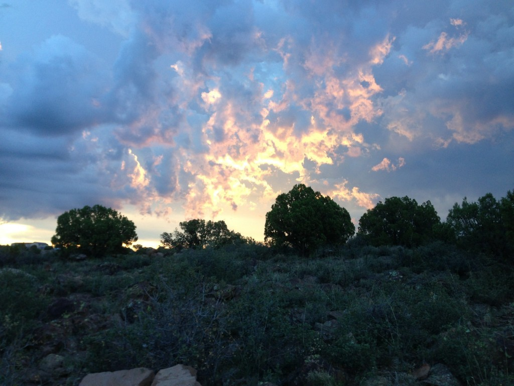

Large Acreage Communities

One of our specialties here at Dirt Road Real Estate is finding the right rural community for you! These are
some of the communities we've developed ties with in the Kingman/Hackberry Area. Some of these ranches have have
now been developed into mini-ranches for country living. Click on the drop down to learn more about each
community!
These communities offer a wide range of elevation, terrain, and vegetation. Some, like Windmill Ranches and
Cedar Hills, are high desert slopes with endless views. Willow Creek Ranch and others offer a beautiful
pinyon-juniper habitat with rolling foothills and sweeping canyons. A few communities even overlook high
mountain vistas at an altitude of over 6,000 feet. Many of these communities also offer water tables at a depth
that makes drilling a well viable, unlike many locations further east.
Despite their differences, these communities share many similarities that make them attractive to many. They
offer properties that are private, quiet, and peaceful, where the only sound is the wind through the trees or
grasses. The properties are versatile, and can be lived on sustainably. The climate is mild year round, with
minimal heat in the summer and minimal cold in the winter. Some properties are inexpensive, allowing owners to
live on a fixed cost when paid off. Finally, many of these properties offer views that cannot be beat.